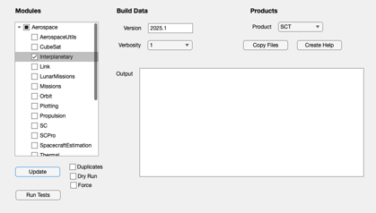
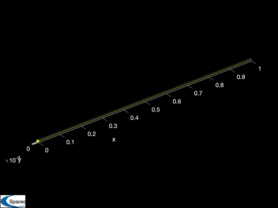
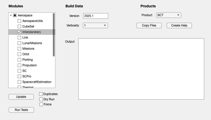
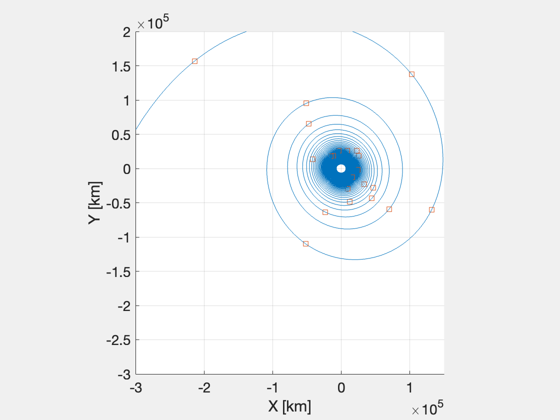
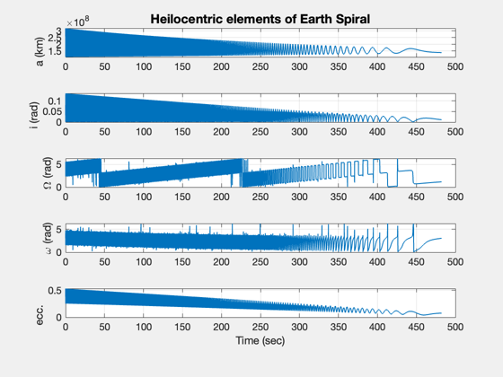

Simulates a spiral out from LEO.
The trajectory as plotted as well as the orbital elements in the heliocentric frame. The final orbital elements at the end of the spiral out are printed to the command window. This demo demonstrates several coordinate transformation
Since version 10. ------------------------------------------------------------------------ See also Constant, CRTBPRHS, El2RV, RV2El, TransformECIToSEMR, SEMRToSEMI, FCRTBPRHS, LowThrustCRTBP_StopFcn, Plot2D, PlotSEMTraj ------------------------------------------------------------------------
Contents
%------------------------------------------------------------------------------- % Copyright (c) 2012 Princeton Satellite Systems, Inc. All rights reserved. %-------------------------------------------------------------------------------
Constants
%----------- muSEM = Constant('mu sem'); aU = Constant('au'); earthYear = Constant('earth year'); muEarth = Constant('mu earth'); muSun = Constant('mu sun'); radiusEarth = Constant('earth radius equator'); degToRad = pi/180; secPerDay = 86400; vOrbit = 2*pi*aU/earthYear; % Earth orbital velocity about the sun km/year g = 0.009806; % gravitational acceleration (km/s^2)
Stopping ratio
This is the ratio of sun gravity to earth gravity at the point of interest.
ratioStopping = 2;
Spacecraft Parameters
Mass, thrust and specific impulse.
mass0 = 27; % mass (kg) thrust = 3.8e-6; % thrust (kN) Isp = 2460; % specific impulse (sec)
Orbit
Starting date and orbital elements.
startDate = [2012 8 8 12 0 0]; altitude = 600; inc = 0; % inclination ... Use 21 deg to match lunar inc raan = 348; % right ascension ... Use 348 deg to match lunar raan ecc = 0.0; % eccentricity meanAnom = 0.0; % mean anomaly
Derived parameters
%-------------------- uE = g*Isp; % exhaust velocity (km/s) rE = muSun*aU/(muSun + muEarth); rS = aU - rE; jD0 = Date2JD(startDate); sma = radiusEarth + altitude; el0 = [sma, inc*degToRad, raan*degToRad, 0, ecc, 0]; [rECI,vECI] = El2RV(el0,muEarth); % Transform from ECI to SEM rotating frame %----------------------------------------- [rSEMR0,vSEMR0] = TransformECIToSEMR(jD0,rECI,vECI); rSEMRND0 = rSEMR0/aU; vSEMRND0 = vSEMR0/vOrbit; % Simulate in CRTBP with no thrust applied to ensure it is a stable LEO as % expected %------------------------------------------------------------------------- disp('Simulate in CRTBP with no thrust applied using CRTBPRHS...') options = odeset('RelTol',1e-12,'AbsTol',1e-28); rhs = @(t,y) CRTBPRHS(y,t,muSEM); [t,y] = ode113(rhs,[0 1/12],[rSEMRND0;vSEMRND0],options); PlotSEMTraj(y(:,1:3)','SEMRND')
Simulate in CRTBP with no thrust applied using CRTBPRHS...
ans =
Figure (PlotPSS) with properties:
Number: 1
Name: 'SEMRND'
Color: [0 0 0]
Position: [468 345 560 420]
Units: 'pixels'
Use GET to show all properties
  Simulate spiral out from Earth
The functions and non-dimensional parameters
thrustND = thrust * earthYear^2/ (2*pi*aU); uEND = uE / vOrbit; afun = @(y) thrustND*Unit(y(4:6))/y(7); rhs = @(t,y) FCRTBPRHS(y,t,muSEM,afun(y),uEND); options = odeset('RelTol',1e-12,'AbsTol',1e-14); % Stopping conditions %-------------------- dStop.L = aU; dStop.muSun = muSun; dStop.muEarth = muEarth; dStop.rS = [rS;0;0]; dStop.rE = [rE;0;0]; dStop.ratio = ratioStopping; disp('Simulate spiral out from Earth using FCRTBPRHS...') options = odeset(options,'events',@(t,x) LowThrustCRTBP_StopFcn(t,x,dStop)); [t1,y1] = ode113(rhs,[0 2],[rSEMRND0;vSEMRND0;mass0],options); t1d = t1*earthYear/secPerDay; % time in days rSEMRND = y1(:,1:3)'; vSEMRND = y1(:,4:6)'; mass = y1(:,7); rSEMR = rSEMRND*aU; vSEMR = vSEMRND*vOrbit; jD = jD0 + t1d';
Simulate spiral out from Earth using FCRTBPRHS...
Dimensional ECI sim with spiral
%--------------------------------- disp('Simulate Dimensional ECI sim...') thrust2 = thrust; mDot = thrust2/uE; rhs = @(t,y) [y(4:6); -y(1:3)*muEarth/Mag(y(1:3))^3 + Unit(y(4:6))*thrust2/y(7); mDot]; [t2,y2] = ode113(rhs,[0 10*86400],[rECI;vECI;mass0],options); re2 = y2(:,1:3)'; ve2 = y2(:,4:6)'; m2 = y2(:,7)'; el2 = zeros(length(t2),6); for i=1:length(t2) el2(i,:)=RV2El(re2(:,i),ve2(:,i)); end [rSEMI,vSEMI,m] = SEMRToSEMI( jD, rSEMR, vSEMR ); elHelio = zeros(length(t1),6); for i=1:length(t1) elHelio(i,:) = RV2El(rSEMI(:,i), vSEMI(:,i), Constant('mu sun')); end elHelioExit = elHelio(i,:);
Simulate Dimensional ECI sim...
Plots
%------- NewFig('Low thrust spiral') plot3(rSEMR(1,:)-dStop.L,rSEMR(2,:),rSEMR(3,:)) axis equal set(gca,'fontsize',14) xlabel('X [km]') ylabel('Y [km]') axis([-3 1.5 -3 2 -3 3]*1e5) view(0,90) hold on t1dd = 0:floor(t1d(end)); rd = interp1(t1d,rSEMR',t1dd)'; plot3(rd(1,250:10:end)-dStop.L,rd(2,250:10:end),rd(3,250:10:end),'s') grid on % Plot helio orbital elements of Earth spiral %-------------------------------------------- Plot2D(t1d',elHelio(:,1:5)','Time (sec)',... {'a (km)','i (rad)','\Omega (rad)','\omega (rad)','ecc.'},... 'Heilocentric elements of Earth Spiral'); % Plot spiral out traj in rotating SEMR frame (non-dim) %------------------------------------------------------ PlotSEMTraj(rSEMRND,'SEMRND') %-------------------------------------- % PSS internal file version information %-------------------------------------- % $Id: bb209bf9b35d7e03b131b809c16261c34239a16d $
ans =
Figure (PlotPSS) with properties:
Number: 4
Name: 'SEMRND'
Color: [0 0 0]
Position: [468 345 560 420]
Units: 'pixels'
Use GET to show all properties
  